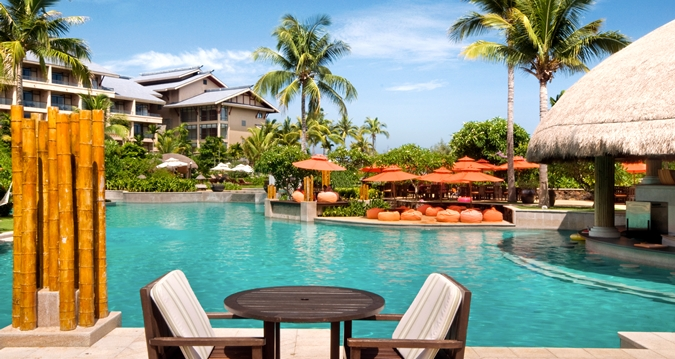

Great Yarmouth had, traditionally, been lacking in such grand hotel resorts. After years of complaints, troubles, and poor services in the area, it was time for someone to come up and offer a richer holiday resort experience. After an initial budget, permission to build the resort started in 2015, and finished in November 2016. Since then, it's taken Norfolk by storm as one of the most premium and top of its class - a feat that very little can admire.
We have numerous facilities, including:
La Monte Young RestaurantA fine nearby restaurant providing both French and English dishes, available from midday to midnight. Highly ranked by critics. |
|
|  |
Resort Swimming PoolYou wouldn't think that Norfolk could have the tropical touch to it, but you'd be wrong! Our swimming pool has won numerous awards for its relaxing nature and facilities. |
Great Yarmouth Gift ShopWhether you want to check in the resort or not, the Great Yarmouth gift shop is full of antiques and other cool stuff - it's guaranteed you'll find something you want in this place! |
|
Jetski ServiceThe nearby port allows for jetski services hosted by the resort. No experience? No problem! Learn how to become a pro very shortly and you'll be sailing across the wonderful Great Yarmouth coast in no time. |
|
Resort HotelsWith a three star and a five star hotel - Great Yarmouth's only five star hotel - your comfort and relaxation are optimised to the fullest. Enjoy complete luxury in the finest Norfolk can offer. |